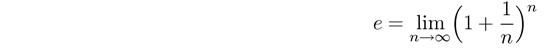
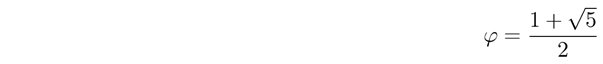
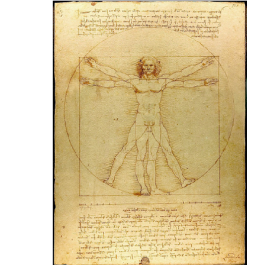
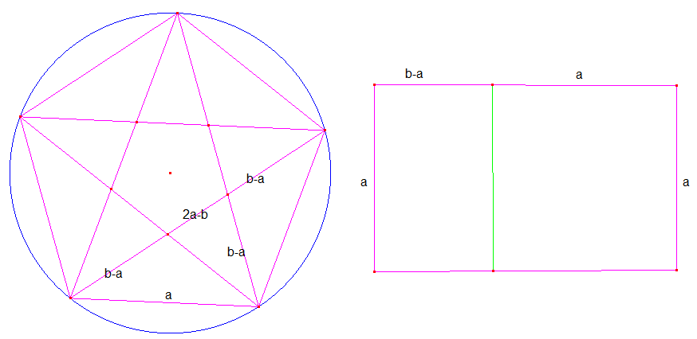
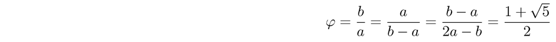
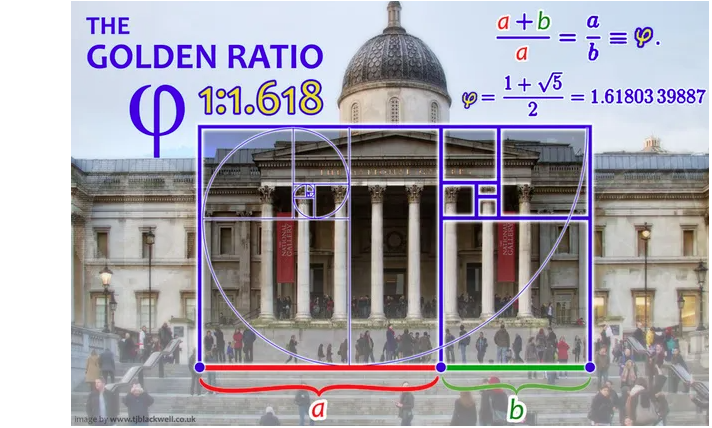
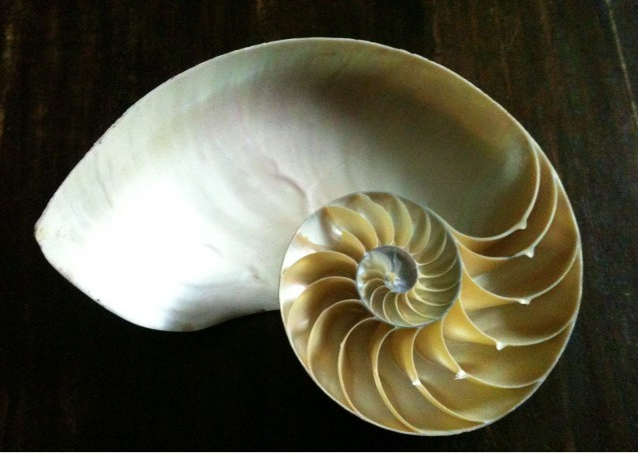

Trang bị các kiến thức cơ bản về đại số, giải tích toán học và toán ứng dụng.
Nó đóng vai trò then chốt để học tập các môn khác trong các trường kĩ thuật và nghiên cứu tiếp sau này.
Từ định lí Euler suy ra chỉ tồn tại 5 loại khối đa diện đều:
tứ diện đều, hình lập phương, khối bát diện đều (8 mặt), khối thập nhị diện đều (12 mặt) và khối nhị thập diện đều (20 mặt).
Các khối đa diện bán đều (còn được gọi là gần đều).
Các khối đa diện bán đều được tạo ra từ các khối đa diện đều.
Kì thi toán có một không hai trên thế giới tại Hungary
Đây là kì thi toán học hàng năm cho sinh viên đại học mang tên "Schweitzer Miklós Matematikai Emlékverseny" để kỉ niệm Schweitzer Miklós. Ông
sinh năm 1923, tốt nghiệp trường phổ thông trung học Mátyás király Gimnázium Budapest năm 1941. Cũng cùng năm đó ông được trao giải “bá tước Eötvös Loránd” ở một kì thi toán dành cho học sinh trung học. Do nguồn gốc Do thái, theo luật hồi đó ông không được nhận vào trường đại học. Ông tự học, tự nghiên cứu và có những kết quả xuất sắc trong lĩnh vực giải tích. Tài năng toán học đầy triển vọng của ông phải dừng lại: ông bị thương chết năm 1945 giữa lúc thủ đô Budapest đang bị bao vây.
Hình thức thi và mức độ khó của kì thi Schweitzer Miklós rất không bình thường. Đề thi gồm 10-12 bài, thi trong thời gian 10 ngày về các lĩnh vực khác nhau của toán học. Điều khác biệt nhất là thí sinh có thể làm bài ở nhà hoặc sử dụng tài liệu trong thư viện, và mức độ khó thì vượt qua tất cả các cuộc thi đã từng biết khác.
Điều mà những nhà tổ chức lo ngại nhất là thí sinh bàn nhau hoặc nhờ trợ giúp từ các nhà toán học bên ngoài. Nhưng cho đến nay chưa hề có dấu hiệu nào về việc ai đó đã vi phạm quy tắc thi.
Hầu hết những người đoạt giải đều trở thành các nhà nghiên cứu thành công sau này. Giáo sư Lovász László, người đã 4 lần đoạt giải nhất kì thi Schweitzer Miklós, nguyên chủ tịch Viện Hàn Lâm Khoa học Hungary, nguyên chủ tịch Hội Toán học Thế giới, người vừa được trao tặng giải Abel năm 2021.
Chuyên đề sau đại học cho kĩ sư các ngành kĩ thuật
Quá trình ngẫu nhiên xích Markov và ứng dụng
Xích Markov là một quá trình ngẫu nhiên gồm các trạng thái vật lí của một hệ thống. Mỗi trạng thái chuyển đổi ngẫu nhiên
từ trạng thái này sang trạng thái khác theo thời gian. (Thời gian có thể rời rạc hoặc liên tục).
Xích Markov giả thiết hệ thống ở khoảng thời gian tiếp theo chỉ phụ thuộc vào trạng thái hiện tại của hệ, chứ không phụ thuộc vào trạng thái của hệ ở các thời điểm trước.
Môn học này nghiên cứu quy luật chuyển đổi của hệ thống và đưa ra các dự báo của hệ thống trong tương lai.
Số PHI (ϕ) và tỉ số thần thánh (tỉ số vàng) trong thế giới tự nhiên
Trong toán học có những con số nổi tiếng vì nó được sử dụng nhiều. Số PI (số π) chẳng hạn, chúng ta biết đến nó ngay từ những năm học cấp I qua công thức tính chu vi, diện tích hình tròn. Nó xấp xỉ với 3,14 nhưng không phải 3,14. Nó là số siêu việt, tức là nó không là nghiệm của một đa thức với hệ số hữu tỉ.
Số e lại là một số nổi tiếng khác. Nó xấp xỉ với 2,718 và cũng là một số siêu việt. Nó là cơ sở cho giải tích toán sau này.
Mặc dầu số e được định nghĩa là giới hạn của một dãy số đơn điệu tăng

nhưng nó lại có những tính chất đơn giản đến bất ngờ: đạo hàm hàm số mũ ex bằng chính nó.
(Nó là hàm duy nhất không tầm thường có tính chất như vậy).
Bài viết này sẽ giới thiệu số PHI (số φ), nó xấp xỉ 1,618. Như vậy nó gần bằng (có lớn hơn chút chút) so với một nửa số PI, tuy chữ “PHI” nhiều hơn “PI” một chữ cái “H”! Nó là số vô tỉ nhưng không phải số siêu việt. Chính xác hơn nó là nghiệm của phương trình bậc hai x2-x-1=0 hay

Số φ nổi tiếng vì nó gắn liền với thế giới tự nhiên chúng ta. Có người nói φ được coi là con số đẹp nhất trong vũ trụ (φ is generally considered the most beautiful number in the universe).
Các nhà sinh vật học khi nghiên cứu đo đạc một con ốc anh vũ đã chỉ ra tỉ số của mỗi đường kính vòng xoắn này với đường kính vòng xoắn kế tiếp của nó bằng 1,618.
Ngạc nhiên hơn khi đếm số ong trong một tổ ong bất kì, tỉ số giữa số ong cái và số ong đực cũng bằng 1,618.
Leonardo da Vinci đã vẽ một bức tranh nổi tiếng mang tên Người Vitruvius. Bức vẽ mô tả một người đàn ông khỏa thân ở hai trạng thái khác nhau (duỗi thẳng chân và dạng chân) nằm trong một hình tròn và hình vuông trùng trục đối xứng, số đo của người đàn ông được Da Vinci ghi chép phía dưới hình vẽ.

Các tỉ số sau trong cơ thể người luôn xấp xỉ với φ:
- Đỉnh đầu tới rốn (hoặc cùi chỏ) / đỉnh đầu tới ngực
- Đỉnh đầu tới rốn (hoặc cùi chỏ) / chiều rộng đôi vai
- Đỉnh đầu tới rốn (hoặc cùi chỏ) / chiều dài cẳng tay
- Đỉnh đầu tới rốn (hoặc cùi chỏ) / chiều dài xương ống quyển
- Đỉnh đầu tới ngực / đỉnh đầu tới gốc sọ
- Đỉnh đầu tới ngực / chiều rộng của bụng
- Vai đến các đầu ngón tay / khuỷu tay đến các đầu ngón tay.
Chính vì vậy số φ còn có tên là tỉ số thần thánh, hay tỉ số vàng.
Tỷ lệ thần thánh cũng xuất hiện trong các kích thước kiến trúc của đền Parthenon Hi lạp, của các Kim tự tháp Ai cập, và thậm chí của cả toà nhà trụ sở của Liên hợp quốc tại New York.
Số φ cũng xuất hiện trong cấu trúc tổ chức của các bản sonate của Mozart, bản giao hướng số 5 của Beethoven, cũng như các tác phẩm của Bartók, Debussy và Schubert. Số φ, thậm chí còn được Stradivarius sử dụng để tính toán vị trí chính xác của những khe hình chữ, khi ông tạo ra những cây đàn viôlông nổi tiếng của mình.

Cuối cùng phải nói đến tính chất rất lí thú của số φ liên quan đến dãy số Fibonacci
0,1,1,2,3,5,6,13,…
Tính chất đặc trưng cho dãy số Fibonacci là một số hạng bất kì của dãy bằng tổng của 2 số liên tiếp đứng kề ngay trước số hạng đó. Dãy Fibonacci có rất nhiều tính chất hay được viết ra bởi các định lí, các công thức toán học. Một trong số đó là thương của 2 số hạng liên tiếp trong dãy
Fibonacci tiến dần đến số φ.
Xem bài "Dãy số Fibonacci..." ở cuối trang Lưu trữ.
Hình chữ nhật mà tỉ số giữa chiều dài và chiều rộng bằng φ, được gọi là hình chữ nhật vàng. Nó luôn được các kiến trúc sư sử dụng khi thiết kế những công trình cần các biểu tượng hài hòa, cân đối.
Tuy nhiên biểu tượng của vẻ đẹp và sự hoàn hảo tối hậu chính là hình ngôi sao năm cánh.
Ở đó tỉ lệ giữa các đoạn thẳng được tạo thành trong hình sao năm cánh, tât cả đều bằng φ.

Đường xoắn ốc Fibonacci ( đường cong tiếp xúc với các cạnh hình chữ nhật vàng) trong một công trình kiến trúc và hình ảnh một con ốc anh vũ. Các sản phẩm của thế giới nhiên và rồi một số công trình kiến trúc được tạo ra hình thành phù hợp với quy luật tỉ lệ vàng.
 
Do φ là nghiệm của phương trình bậc hai x2-x-1=0 nên nó có một vẻ đẹp hình thức toán học rất riêng, duy nhất của chính nó.
Marx György
Huyền thoại về người sao Hỏa
Marx György (Budapest, 25/5/1927 – 2/12/2002) Viện sĩ chính thức Viện hàn lâm Khoa học Hungary, nhà vật lí nguyên tử,
nhà thiên văn học, trưởng khoa vật lí ELTE. Bài đăng trong tạp chí Természettudományi és tudománytörténeti dokumentumok